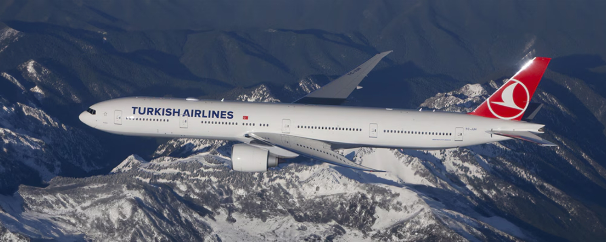
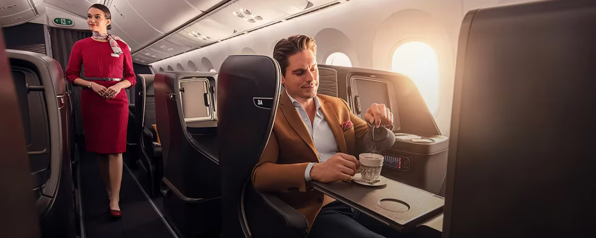
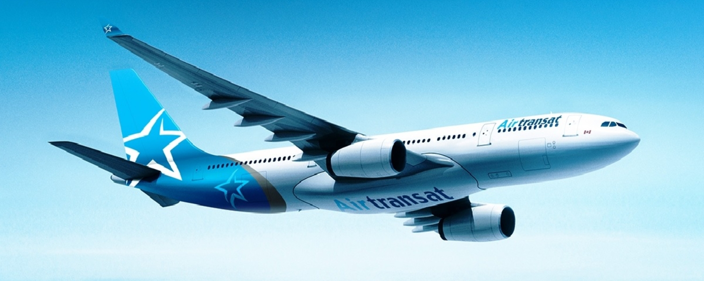
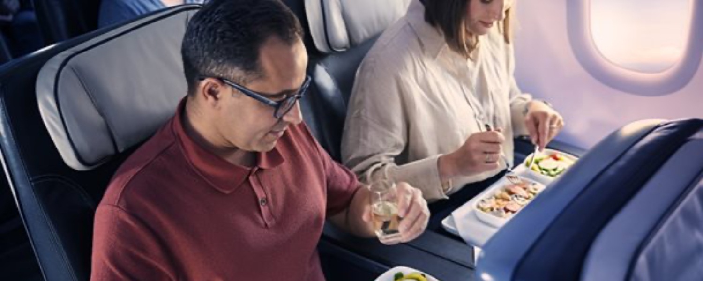
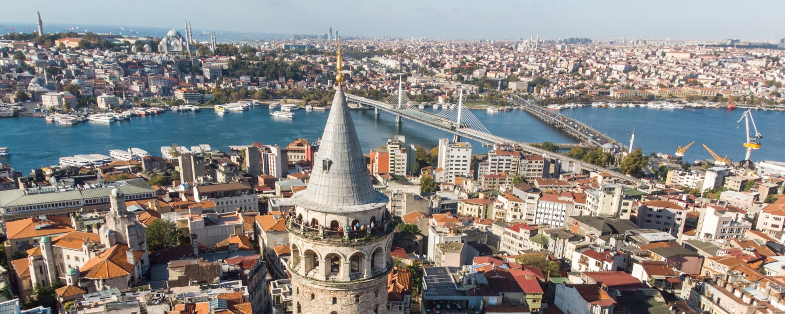

June 2, 2026
Airline NewsTürkiye Is Having a Moment and Canada Just Got a Lot More Connected
Türkiye has long been one of those destinations that punches above its weight. Istanbul alone could keep you busy for weeks, between the grand bazaars, the Bosphorus waterfront, the food, and the sheer density of history layered into every neighbourhood.
Venture further and you have Cappadocia's otherworldly landscapes, the Aegean coast, ancient ruins, and resort towns that rival anything in the Mediterranean. The country has something for almost every type of traveller, and it has never been more accessible from Canada than it is right now.
Here's what's happening.
Turkish Airlines Is Expanding Across All Three Cities

Source: Turkish Airlines
Turkish Airlines already serves Toronto, Vancouver, and Montreal, but starting in July 2026, frequencies are going up across the board. Toronto moves to seven weekly flights, while both Vancouver and Montreal step up to four weekly flights each.
| Flight No. | Route | Start Date | Day | Dep. | Arr. |
|---|---|---|---|---|---|
| TK 017 | IST → YYZ | Jul 4, 2026 | Sat | 14:25 | 21:00 |
| TK 018 | YYZ → IST | Jul 5, 2026 | Sat | 22:45 | 12:35+1 |
| TK 75 | IST → YVR | Jul 5, 2026 | Sun | 15:00 | 17:15 |
| TK 76 | YVR → IST | Jul 5, 2026 | Sun | 19:10 | 17:10+1 |
| TK 35 | IST → YUL | Jul 7, 2026 | Tue | 15:05 | 18:10 |
| TK 36 | YUL → IST | Jul 7, 2026 | Tue | 20:05 | 12:25+1 |
*All times local.
Istanbul Airport is one of those hubs that really opens things up, working just as well as a final destination as it does a stopover or connection point onward to the Middle East, Central Asia, Africa, Southeast Asia, and deeper into Europe, often all on a single itinerary.
Some people make Istanbul the whole trip, others use it purely as a launching pad, and both approaches make a lot of sense given what the city has to offer.
What to Expect Onboard Turkish Airlines

Source: Turkish Airlines
The hardware varies by route, so it's worth knowing what you're getting before you book.
Toronto and Vancouver are served by a mix of the Boeing 787 Dreamliner and the Boeing 777. On the 787, business class is a 1-2-1 configuration with direct aisle access from every seat and lie-flat beds. The 777 also has lie-flat beds, but runs a 2-3-2 business class layout. That configuration is a bit dated at this point, and the catch is that middle seats in the centre section don't have direct aisle access. If you're booking business class on the Toronto or Vancouver routes, it's worth checking which aircraft is operating your specific flight and trying to get on the 787 if you can. Economy on both aircraft is 3-3-3.
Montreal gets the Airbus A350, which runs the same 1-2-1 lie-flat business class layout as the 787. Every seat has direct aisle access, no compromises. Economy is 3-3-3.
Air Transat Is Adding Montreal to Istanbul

Source: Air Transat
Air Transat launched Toronto–Istanbul in 2025 and it quickly found an audience. Starting October 29, 2026, they're adding a second Canadian gateway with a new non-stop service between Montreal and Istanbul. The route runs twice weekly, on Tuesdays and Thursdays, year-round, on an Airbus A330.
| Flight No. | Route | Days | Dep. | Arr. |
|---|---|---|---|---|
| TS 314 | YUL → IST | Tue, Thu | 8:50 PM | 2:05 PM+1 |
| TS 315 | IST → YUL | Wed, Thu | 4:25 PM | 7:05 PM |
*All times local.
Air Transat's Club Class, which sits somewhere between premium economy and a domestic business class, is a 2-2-2 layout on the A330. You get some nice perks with a Club Class fare like bigger seats, more pitch, and better meals, but it's not a true international business class and the seats are not lie-flat. If a fully flat bed is a priority, Turkish Airlines is the better option for that.
Further back, economy on the A330 is a standard 3-3-3 configuration.

Source: Air Transat
What makes the Air Transat announcement particularly interesting is the partnership dimension. Air Transat and Turkish Airlines have had an interline and codeshare agreement in place since November 2025, which means passengers can book a single ticket and check their bags through to their final destination beyond Istanbul, whether that's somewhere in Europe, Asia, the Middle East, or further afield.
Combined with Air Transat's domestic Canadian network feeding into both Toronto and Montreal, travellers from cities like Halifax, Ottawa, Quebec City, Winnipeg, and Calgary can connect to up to five weekly departures to Istanbul between the two gateways.
One Thing Worth Noting
Air Canada does not currently operate any direct service from Canada to Istanbul. Turkish Airlines and Air Transat are the only carriers offering non-stop options on this route right now.
Why This Is Worth Paying Attention To

Istanbul is one of those cities that tends to surprise people, as the history, architecture, and food are all incredible. Sitting at the actual crossroads of Europe and Asia, it provides a unique experience that's hard to replicate elsewhere.
Türkiye beyond Istanbul is just as compelling, with Cappadocia's landscapes, the Aegean coast, and Antalya all offering something quite different from the typical European trip.
The Canada–Türkiye connection has been growing steadily, driven by a growing Turkish-Canadian community and increasing leisure travel interest. The frequency increases and new routes we're seeing now reflect real demand that's been building for a while. It's good news for Canadian travellers that the airlines are responding to it.
Happy travels!